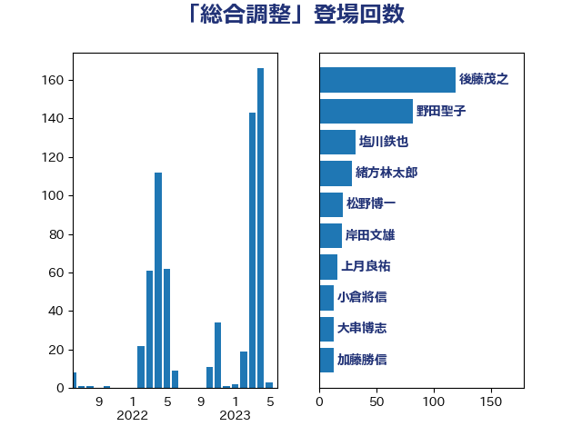

単語「総合調整」

| 後藤茂之 | 自由民主党 | 119 回 |
| 野田聖子 | 自由民主党 | 82 回 |
| 塩川鉄也 | 日本共産党 | 32 回 |
| 緒方林太郎 | 無所属 | 29 回 |
| 松野博一 | 自由民主党 | 21 回 |
| 岸田文雄 | 自由民主党 | 20 回 |
| 上月良祐 | 自由民主党 | 16 回 |
| 小倉將信 | 自由民主党 | 13 回 |
| 大串博志 | 立憲民主党 | 13 回 |
| 加藤勝信 | 自由民主党 | 13 回 |
| 水野素子 | 立憲民主党 | 11 回 |
| 松本尚 | 自由民主党 | 8 回 |
| 阿部司 | 日本維新の会 | 7 回 |
| 磯崎仁彦 | 自由民主党 | 7 回 |
| 杉尾秀哉 | 立憲民主党 | 7 回 |
| 枝野幸男 | 立憲民主党 | 6 回 |
| 谷公一 | 自由民主党 | 4 回 |
| 西銘恒三郎 | 自由民主党 | 4 回 |
| 葉梨康弘 | 自由民主党 | 4 回 |
| 柴田巧 | 日本維新の会 | 4 回 |
| 堀場幸子 | 日本維新の会 | 4 回 |
| 吉川赳 | 無所属 | 4 回 |
| 伊波洋一 | 無所属 | 4 回 |
| 若宮健嗣 | 自由民主党 | 3 回 |
| 礒崎哲史 | 国民民主党 | 3 回 |
| 河野太郎 | 自由民主党 | 3 回 |
| 松沢成文 | 日本維新の会 | 3 回 |
| 東徹 | 日本維新の会 | 3 回 |
| 本庄知史 | 立憲民主党 | 3 回 |
| 早稲田ゆき | 立憲民主党 | 3 回 |
| 太栄志 | 立憲民主党 | 3 回 |
| 堀内詔子 | 自由民主党 | 3 回 |
| 伊佐進一 | 公明党 | 3 回 |
| 高市早苗 | 自由民主党 | 2 回 |
| 馬場雄基 | 立憲民主党 | 2 回 |
| 足立康史 | 日本維新の会 | 2 回 |
| 赤池誠章 | 自由民主党 | 2 回 |
| 美延映夫 | 日本維新の会 | 2 回 |
| 玉木雄一郎 | 国民民主党 | 2 回 |
| 浅野哲 | 国民民主党 | 2 回 |
| 林芳正 | 自由民主党 | 2 回 |
| 末松信介 | 自由民主党 | 2 回 |
| 山際大志郎 | 自由民主党 | 2 回 |
| 小林鷹之 | 自由民主党 | 2 回 |
| 宮路拓馬 | 自由民主党 | 2 回 |
| 大西英男 | 自由民主党 | 2 回 |
| 塩田博昭 | 公明党 | 2 回 |
| 友納理緒 | 自由民主党 | 2 回 |
| 齋藤健 | 自由民主党 | 1 回 |
| 高野光二郎 | 自由民主党 | 1 回 |
| 高見康裕 | 自由民主党 | 1 回 |
| 高木かおり | 日本維新の会 | 1 回 |
| 青柳陽一郎 | 立憲民主党 | 1 回 |
| 鈴木英敬 | 自由民主党 | 1 回 |
| 鈴木俊一 | 自由民主党 | 1 回 |
| 赤羽一嘉 | 公明党 | 1 回 |
| 赤澤亮正 | 自由民主党 | 1 回 |
| 落合貴之 | 立憲民主党 | 1 回 |
| 自見はなこ | 自由民主党 | 1 回 |
| 羽生田俊 | 自由民主党 | 1 回 |
| 秋葉賢也 | 自由民主党 | 1 回 |
| 石原宏高 | 自由民主党 | 1 回 |
| 田村智子 | 日本共産党 | 1 回 |
| 田村憲久 | 自由民主党 | 1 回 |
| 田村まみ | 国民民主党 | 1 回 |
| 田中健 | 国民民主党 | 1 回 |
| 渡辺周 | 立憲民主党 | 1 回 |
| 渡辺博道 | 自由民主党 | 1 回 |
| 永岡桂子 | 自由民主党 | 1 回 |
| 森田俊和 | 立憲民主党 | 1 回 |
| 梅谷守 | 立憲民主党 | 1 回 |
| 松本剛明 | 自由民主党 | 1 回 |
| 木原誠二 | 自由民主党 | 1 回 |
| 早坂敦 | 日本維新の会 | 1 回 |
| 打越さく良 | 立憲民主党 | 1 回 |
| 平林晃 | 公明党 | 1 回 |
| 川田龍平 | 立憲民主党 | 1 回 |
| 山谷えり子 | 自由民主党 | 1 回 |
| 奥野総一郎 | 立憲民主党 | 1 回 |
| 塩村あやか | 立憲民主党 | 1 回 |
| 堤かなめ | 立憲民主党 | 1 回 |
| 城井崇 | 立憲民主党 | 1 回 |
| 和田義明 | 自由民主党 | 1 回 |
| 和田政宗 | 自由民主党 | 1 回 |
| 吉田統彦 | 立憲民主党 | 1 回 |
| 吉田久美子 | 公明党 | 1 回 |
| 佐藤英道 | 公明党 | 1 回 |
| 伊東良孝 | 自由民主党 | 1 回 |
| 中谷一馬 | 立憲民主党 | 1 回 |
| 中川郁子 | 自由民主党 | 1 回 |